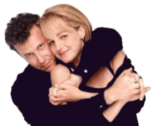

mad about you
Paul and Jamie are so in love
I want to scream.
so it's easy to forget
that they are really
Paul of the wide-eyed one-liner
and Helen who chases men who chase tornados.
their New York City
was never my New York City.
their Waverly Theatre
ignores the initials
I carved into a seat
when I grew tired of reading subtitles.
passing the news stand
there was no trace
of my beautiful bride-to-be.
a stray dog
who looked nothing like Murray
sniffed a black trash bag
and marked it.
on Seventh Avenue
my life was re-enacted by a mime
when I stopped to buy a two-dollar tie.
it didn't take very long.
when he was done
he thrust out his palm and smiled.
I gave him the tie.
he frowned and gave it back to me.
then I changed the channel.
Paul David Mena
6 December, 1996
Somerville, MA

 back to my poetry page
back to my poetry page